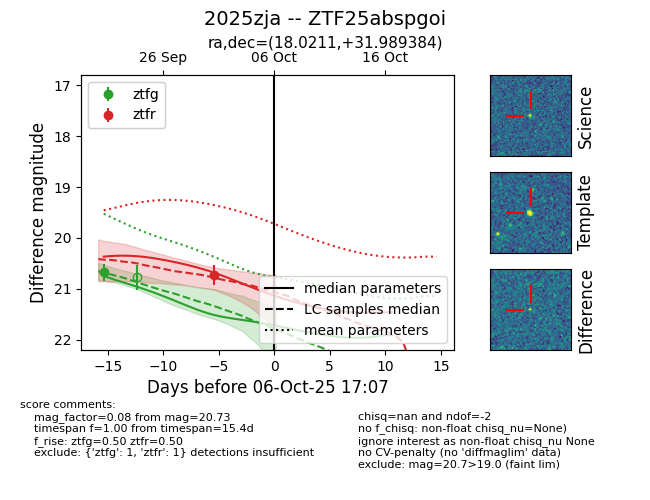
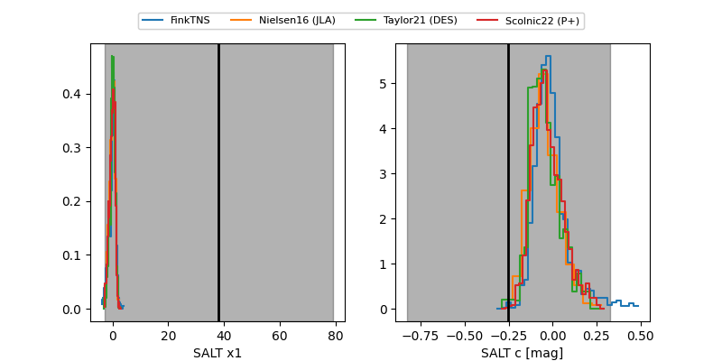

FINK: ZTF25abspgoi
Lasair: ZTF25abspgoi
ALeRCE: ZTF25abspgoi
TNS: 2025zja
YSE: 2025zja
ZTF25abspgoi (ztf,fink)
2025zja (tns,yse)
equatorial (ra, dec) = (18.0211,+31.98938)
galactic (l, b) = (128.0220,-30.67822)


last ztfg=20.68, ztfr=20.73
1 ztfg, 1 ztfr detections